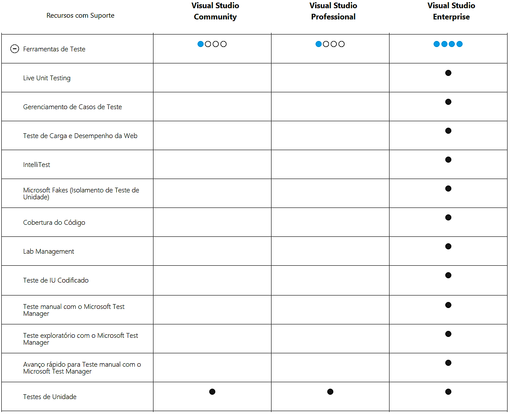
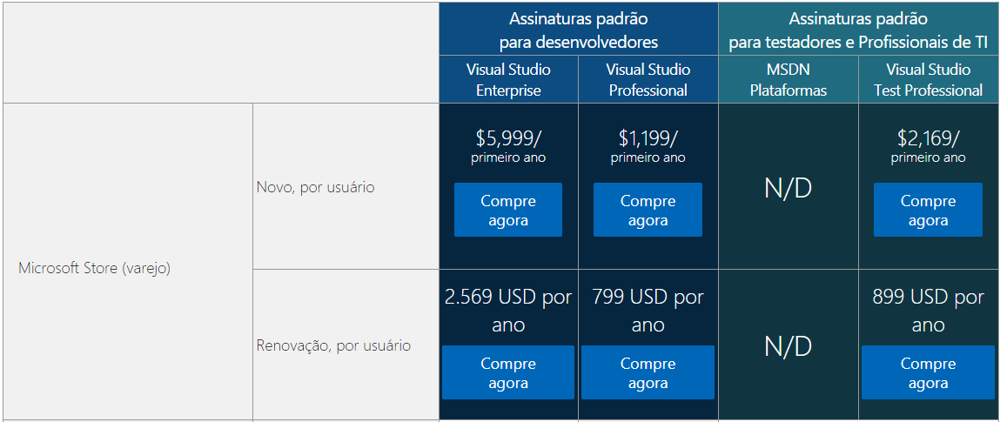
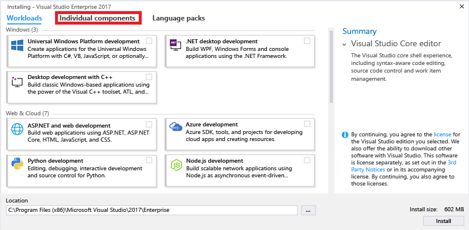
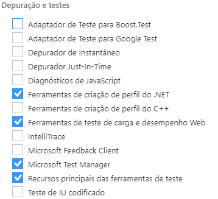

Teste de desenpenho com a ferramenta VisualStudio
O VisualStudio é uma ferramenta de desemvolvimento integrado da Microsoft, capaz de oferecer suporte completo para o desenvolvimento de software multiplatafoemas, apliações Web e desemvonvimento Mobile multiplataforma. A ferrmenta possuí diversas funcionalidades para o desenvolvimento de apliccações, sendo uma delas as ferramentas de teste de desenpenho que ela oferece. Essas funionalidades serão nosso foco neste artigo.
Versões
O VisualStudio é suportado atualmente por apenas as plataformas Windows e Mac. Sendo distribuidas em em tres tipos: Community, Professional e Enterprise. Como vamos focar apenas nas ferramentas de teste, vou mostrar apenas a diferenças entres elas das funcionalidades de teste. Para mais informações das disferrenças entre funcionalidade de cada verção cliqui aqui.
Lembrando que ambas versões podem ser baixadas gratuitamente, porém, as versões Professional e Enterprise teram limitações (Versão de teste). Umas das limitações é o numero de carga de usuario por teste de carga, limitando se apenas por 250 usuarios. A figura abaixo mostrar os valores atuais das versões pagas (Assinatutas padrões). Para mais informações cliqui aqui.
Instalação da ferramenta
Como queremos realizar testes de desempenho devemos fazer o download da versão Enterprise. Quando terminar o download execute o arquivo "vs_enterprise.exe", aceite os termos de uso e instale a ferramenta. Ao chegar na tela de escolha de paotes clique em componentes individuais.
Em seguida escolha os componentes de acordo com a imagem abaixo para a ferramenta realizar o download dos paotes necessários efinalize a instalação.
Requisitos para instalação da ferramenta
Para mais informações detalhadas clique aqui.
Arquitetura da Ferramenta
Por se tratar de uma ferramenta de iniciativa privada da Microsoft, a empressa não deixa o código fonte disponível para que possamos ver sua arquitetura. Pela minha experiência com a ferramenta acredito se seja uma arquitetura baseada em componentes, pois é possivel instalar a IDE sem nenhuma funcionalidade e depois seleionar os pacotes neccessarios para termos accesso a funcionalidades específias. Como mostratado na seção de instalação tivemos que escolher apenas os pacotes de testes específicos